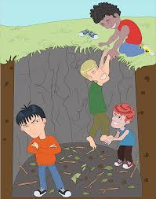

Inquiry
The ability to ask questions about stuff you don't know or want to know. You use Inquiry to ask your peers and your teacher. When I say the ability I do not mean that you have to able to ask question because everyone can do that but I am saying that you can ask clear question that relates to what you want to learn. Inquiry also helps you build a mindset to want to learn.

Persistance
The ability to keep on keeping on even when struggling. Persistence can help you keep from stressing out which can make the thing you are working on a lot better. It also helps you to the most of what you learn because sometimes when you get bored and you don't want to learn anymore so you stop before you could fully understand what you are learning.
Collaboration
The ability to work in groups and be effective. Collaboration in my opinion is the most important quality because you practically have to use it for the most of your life. Collaboration can help you help you successfully work in groups which is needed our school snice you work in groups a lot and for about every single job you will ever work at unless you work at home.

Communication
The ability to talk to others in a clear and effective way. Talking in a clear and effective way means that you speak in a way that people can understand, so that means not speaking so fast that nobody can hear you but also not talking so slow that it takes you 10 minutes to complete a sentence. Also speaking fluently and not stuttering and talking at an appropriate volume is all part of the communication quality.
Creativity
The ability to think outside of the box. Thinking outside the box means to think in a way that most people would not think. When you use creativity you can be very unique.